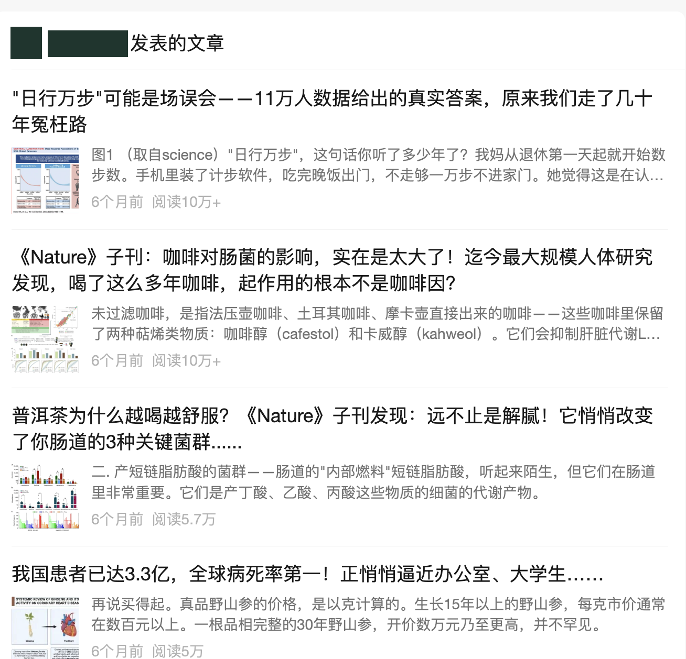
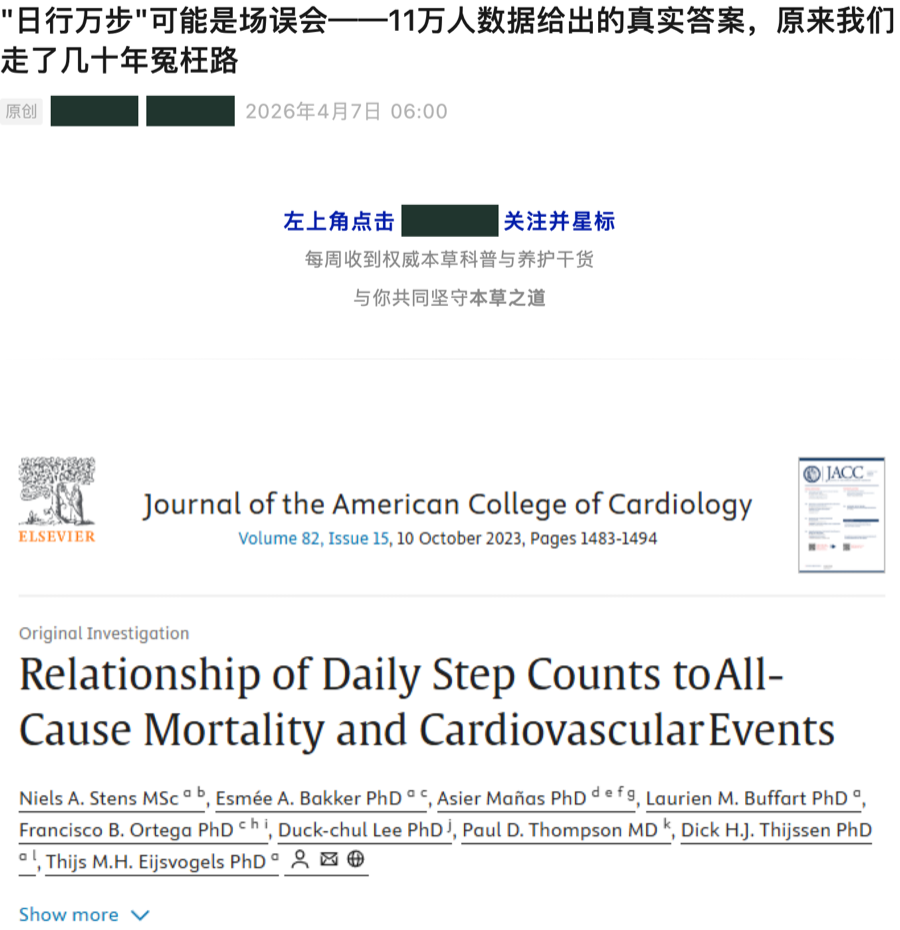

AI application · Selected case study
让 AI 处理重复，
让人负责判断。
一个面向健康科普内容团队的 AI 工作流实践。
把重复的信息处理、起草与排版交给 AI，
把人的时间还给创意、审美与批判性思考。
业务需求拆解人机协作AI 产品运营
CONTENT WORKSPACE人审优先
编辑 · 从飞书发起任务基于这份研究素材起草内容，
沿用既有模板，保存到草稿箱。
Bridge → 模型与执行工具任务处理
整理素材生成草稿模板排版
✓保存草稿，交给人审核编辑初审 → 第二位审核人 → 发布决策
逻辑示意 · 非运行截图 · 自动执行止于草稿
- Context / 场景
- 健康科普公众号 · 名称脱敏
- Focus / 个人工作
- 需求设计、规范制定与迭代验收
- Delivery / 产物
- 可审阅草稿、修正报告与格式规则
01
问题不在“写不出来”，而在重复。
内容生产需要在热点工具、文献资料、AI 对话框和公众号编辑器之间来回切换。素材处理、文章起草和固定排版反复占用编辑时间。
但效率不是唯一目标。选题是否值得做、证据能否支持结论、表达是否适当、文章能否发布，仍然需要人来判断。
不是把编辑拿掉，
而是把编辑的时间还给判断。
先划清人和 AI 的分工
AI 辅助检索与整理资料、生成草稿、执行固定模板排版、提出审校建议。
人来决定内容方向、来源取舍、事实核验、品牌表达，以及最终发布。
交接位置草稿箱，而不是直接发布。流程保留两轮人工校对。
02
谁来做、交付什么、在哪里把关。
从上往下读主流程，横向看职责交接。两种输入汇入共同的生产链路，草稿经过两轮人审后，才进入人工发布环节。
人确定方向与结果
AI 执行重复任务
人工审核与返工
小屏幕可横向滑动；实线为主流程，棕色虚线为返工路径。查看完整流程图 ↗
输入有分支，输出有标准主题任务先找候选材料，文献任务从已选资料开始；两者都交付待审稿，而不是直接对外发布。
不通过，就返回具体环节证据或表达问题回到内容修改；结构与格式问题回到排版。修改后仍需人重新审阅。
规则可以沉淀，责任不能省略参考 HTML、写作规范和 Skill 帮助复用正确做法；独立审校案例不被包装成全流程自动质检。
同一个原则：生成完成不等于审核通过。图示是业务流程概括，不是底层调用图；人审是流程约定，不据此宣称已实现技术权限隔离。
图示表达参考：Lucid 泳道图的职责划分、Anthropic 的任务拆解与反馈循环、n8n 的人工审批节点。仅参考表达方式，不代表本项目使用了 n8n 或这些框架。
03
真正的产品工作，发生在反馈之后。
两个来自实际工作对话的迭代案例。内容经匿名整理，不展示内部聊天、配置或客户资料。
CASE A / 输入与交付
让“审稿”变成
编辑能直接使用的交付。
系统初版偏重资料提取和脚本说明，而业务用户真正需要的是：哪里有问题、为什么，以及怎么改。
我提出直接输入文案，逐句检查；返回修正报告和完整改正稿，而不是让用户理解技术操作。
我测试使用真实长稿检验输出，并继续提出精修与交付要求。
可见结果对话中形成了修正报告、改正稿和精修稿。其中，误列为“用户反馈”的名人引言被指出并移除。
这是单次可观察的改动，不代表系统能自动保证整篇事实准确或合规。
CASE B / 格式验收
“风格接近”，
不等于“格式正确”。
沿用已有稿件，意味着遵循参考 HTML 结构，而不是重新生成一个看起来相似的模板。
我验收确认合格 HTML 版本后，要求把这次正确做法写入后续可复用的 Skill。
规则化复用参考稿骨架与固定尾部，不擅自新增标题块或不一致的排版结构。
可见结果对话显示文件交付与本人验收，系统回报更新了格式规则和实践记录。
这是工作流规则更新，不是模型训练；后续复用的通过率尚未测量。
04
从工作流，走到实际发布。
效率改善与作品表现，是两个不同维度的成果。前者来自本人简历记录，后者由实际发布截图呈现。
- 单篇排版耗时
- 45 分钟 → 5 分钟
每篇排版节省约 40 分钟，让编辑少做重复格式调整。
- 整体工作效率
- 70% 以上提升
通过工作流 SOP 化、Agent 执行与人机协同优化。
效率数据依据本人简历中的项目记录：“单篇排版从45分钟缩至5分钟”“整体效率提升超70%”。排版耗时与整体效率是不同统计口径；当前展示未附逐篇计时日志，不将排版节省比例等同于全流程提速。
经人工审核发布的代表作品
- 代表作品 · A / B
- 10万+× 2
两篇平台显示阅读量
这四篇精选作品均使用当时的 AI 工作流，经人工审核后发布。阅读量保留平台原始显示口径，不代表全量平均表现或去重读者数，也不意味着阅读增长可以单独归因于 AI。
真实产出 · 已发布文章列表 账号名称与头像已遮挡
打开大图 ↗

原图仅对账号名称与标识做不可逆像素遮挡，其余内容未修改。截图呈现历史发布成果，不替代对其中科学表述的逐项核验。
代表文章 · 内容展示 实际首屏 + 脱敏全文
阅读全文 ↗

首屏为实际页面的脱敏截图；全文是按本人提供的原文整理的脱敏静态版，不是长截图。名称已从文本中移除，图片中的品牌名称已遮挡，不保留原账号外链与网页交互。仅展示历史作品，不作为健康建议。
05
我的贡献，不止于发出一个提示词。
DEFINE
拆解业务问题
识别重复劳动，明确任务输入、交付形式和人工审核位置，把宽泛需求变成具体流程。
ITERATE
用真实任务检验
提供实际文案、定义修正报告要求，审阅 HTML 产物，并通过反馈推动输出靠近业务标准。
STANDARDIZE
推动规则复用
将受众表达、固定排版和审校要求组织为规范，要求系统记录经过验收的正确做法。
本案例重点呈现本人在需求、规范与迭代中的贡献；机器人执行的文件修改不等同于本人手写底层代码。效率数据沿用简历口径，不另作运行成本或全天候稳定性承诺。
06
我想用 AI 放大的，是人的判断力。
在这个项目里，我不把 AI 看成人的敌人。让我想改变的，是编辑必须反复复制素材、调整格式、在工具之间搬运内容的工作方式。机器可以承担这些高重复、规则明确的执行，让人有更多精力去发现问题、提出新角度，做更有创造性、更需要 critical thinking 的工作。
所以，我设计的不是“让 AI 包办一篇文章”，而是重新分配工作：哪些动作可以标准化，哪些判断需要结合读者、语境与证据，哪些责任无论生成得多快都不能外包。
AI 可以扩大我的选择空间，
但不能替我决定什么值得表达、什么值得相信。
营销环节
交给 AI 的重复工作
我坚持留给人的判断
选题与信息搜索
AI 执行汇集热点、检索候选资料，整理可讨论的方向。
人来判断不只问“什么容易被点击”，更问“读者真正需要什么、这个话题为什么值得讲”。
材料处理与起草
AI 执行整理输入材料、生成初稿，按明确的受众规范调整表达。
人来判断回到原始研究检查论据与结论，分清相关和因果，不把机制解释写成疗效承诺。
视觉与固定排版
AI 执行按已经验收的 HTML 模板执行字号、段落与固定模块。
人来判断决定什么画面有信息、哪里该留白、哪些强调会喧宾夺主；模板一致不等于表达有品位。
交付与发布
AI 执行保存草稿、输出修正建议，减少重复搬运和格式操作。
人来判断两轮校对后决定是否发布；对专业表述、品牌承诺和读者可能采取的行动负责。
TASTE / 审美与取舍
审美不是一套格式参数。
对我来说，taste 不只是“好不好看”，而是理解受众后知道该强调什么、删去什么，以及哪里应该保持克制。一个标题可能更吸睛，却让读者产生不必要的焦虑；一张图可能更精美，却没有解释任何问题。
AI 可以模仿风格、提供选项，但我不把最终的审美取舍交给它。真正重要的不是生成了多少版本，而是为什么选这一版。
CRITICAL THINKING / 质疑与验证
写得流畅，不等于说得成立。
健康内容尤其需要区分“像专业知识的表达”和“有证据支持的结论”。我希望省下来的时间，用于追问研究对象是谁、结论适用于什么条件、文案有没有越过证据边界，而不是更快复制一个未经核实的答案。
当依据不足时，人的工作不是替 AI 把话说圆，而是要求补证据、缩小结论，或决定不发布。
ACCOUNTABILITY / 专业责任
可以委托执行，不能外包责任。
AI 提出的审校意见仍需核验，系统显示“完成”也不代表稿件可用。编辑要对表达负责，涉及专业判断时要交由具备相应知识的人复核；不能把工具生成当作专业背书。
这也是我把自动执行的终点设为草稿箱的原因：发布是一项需要承担后果的决定，而不只是最后一次点击。
我的衡量标准：不只做得更快，也把时间用在更值得做的事上。
排版从 45 分钟缩到 5 分钟，意味着每篇可以少花约 40 分钟做机械操作。我的目标不是省掉这 40 分钟里的人，而是让人把精力转向选题创意、信息取舍和专业核验。下一步，我希望在已有的效率记录之外，继续记录返工率、审核质量与时间去向，让“人机协作”不仅有速度，也有质量。